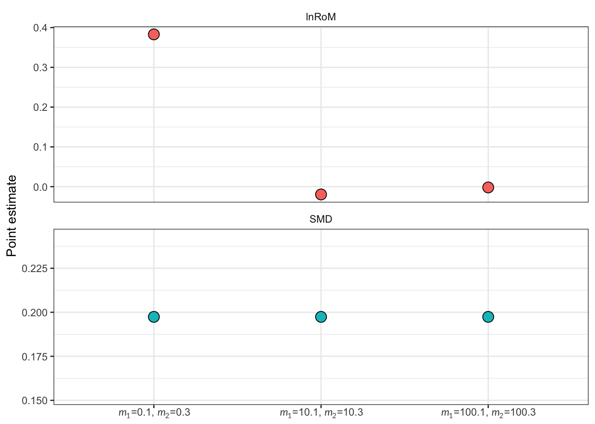

escalc(m1i = 12, sd1i = 3, n1i = 20,
m2i = 10, sd2i = 2, n2i = 20,
measure = "SMD")
yi vi
1 0.7689 0.1074 Standardized mean differences, log ratios of means, and related biological questions
This class of effect sizes is among the most commonly used in ecology and evolution. These effect sizes compare a continuous response between two groups. For example:
Do animals exposed to a treatment weigh more than control animals?
Does warming change plant biomass?
Do pesticides reduce the abundance of non-target insects?
Are prey less abundant where predators are present?
Studies like these often report the same basic information: a mean, standard deviation, and sample size for each group. However, the same data can answer several different biological questions.
Before choosing an effect size, ask what kind of difference matters:
| Biological question | Effect size |
|---|---|
| How far apart are the group means relative to variation among observations? | Standardized Mean Difference (SMD) |
| How many times larger or smaller is one group mean than the other? | Log-transformed ratio of means (lnRoM) |
| Does one group have responses of greater magnitude, regardless of direction? | log-magnitude (lnM) |
| Is the response more variable in one group? | log variability ratio or coefficient of variation (lnVR, lnCVR) |
These effect sizes may use similar information and may be interpreted in similar ways, but they do not answer the same question. The biological question should determine which one you use.
In this chapter, we focus on SMD and lnRoM. These are important options for comparing mean responses of continuous variables between two groups.
In addition to SMD and lnRoM, comparisons of continuous responses between two groups can often be complimented by analyses of different effect sizes, which capture more than just mean differences. For example, lnM describes magnitude of differences regardless of direction and lnVR/lnCVR describe differences in variability between two groups. These require the same statistical ingredients as SMD and lnRoM. We discuss lnM here and lnCVR/lnVR here
Choosing between SMD and lnRoM is not trivial. The appropriate choice depends on the biological quantity you want to estimate and whether the data meet the assumptions of that effect size.
The log-transformed ratio of means (lnRoM) is often referred to as the log response ratio and, in many articles, is abbreviated with lnRR.
However, lnRR also refers to the log risk ratio (lnRR), which compares the risks of binary events such as survival, infection, or fledging. We discuss lnRR in the chapter on binary outcomes.
Throughout this tutorial, we use lnRoM for the log ratio of means and reserve lnRR for the log risk ratio.
These effect sizes describe continuous mean responses between two groups. To calculate these effect sizes, you will need three statistical ingredients:
means of each group (\(m_1\), \(m_2\))
standard deviation of each group (\(sd_1\), \(sd_2\))
sample sizes (\(n_1\), \(n_2\))
The subscript numbers correspond to the treatment and control groups. These are generally specified as:
group 1: treatment
group 2: control
As such, for both lnRoM and SMD, a negative effect size point estimate indicates that the treatment reduced the mean of the response variable while a positive effect size indicates that treatment increased the response variable mean.
The effect sizes in this section require standard deviation (\(sd\)) for the treatment and control groups. \(sd\) is fundamentally distinct from standard error (\(se\)). Some meta-analyses have mistaken the two, with egregious results. Be sure to convert all measurements of error to \(sd\). Other commonly reported forms of error include 95% confidence intervals (or 90%), variance, and interquartile ranges (e.g., in boxplots). The extraction package metaDigitise() automatically converts \(se\), interquartile ranges, and 95% CIs to \(sd\).
For a group with sample size \(n\), standard error (\(SE\)) and standard deviation (\(sd\)) are related by:
\[ sd = SE\sqrt{n}. \tag{1}\]
Standard deviation is the square root of the variance:
\[ sd = \sqrt{\mathrm{Var}}. \tag{2}\]
If a symmetric confidence interval describes a group mean, first recover its standard error and then convert that standard error to a standard deviation:
\[ \begin{aligned} SE &= \frac{CI_{upper}-CI_{lower}}{2c},\\ sd &= SE\sqrt{n}, \end{aligned} \tag{3}\]
where \(c\) is the critical value used to construct the interval. For a large-sample 95% confidence interval based on the normal distribution, \(c=1.96\). For small samples or intervals based on another distribution, use the critical value reported or implied by the study rather than automatically using 1.96.
SMD and lnRoM have very different interpretations, which are borne from their mathematical formulations. These can be summarized here:
| Data property | SMD | lnRoM |
|---|---|---|
| Should the point estimate account for variability | Yes | No |
| Mean must be > 0 | No | Yes |
| Can the estimates be back-transformed directly to a percentage? | No | Yes |
We’ll walk you through the use and interpretation of these effect sizes with a running biological example. Imagine a warming experiment that measures plant biomass after one growing season:
| Group | Mean biomass | Standard deviation | Sample size |
|---|---|---|---|
| Ambient control | 10 g | 2 g | 20 plants |
| Warming treatment | 12 g | 3 g | 20 plants |
The treatment mean is 2 g higher than the control mean. SMD will express that difference relative to variation among the plants in both treatments, whereas lnRoM will express it as a proportional change in the means alone, regardless of variation. We will use this example to develop and interpret both measures side by side.
SMD is akin to a test statistic: it is the ratio of signal (the mean difference between two groups) and noise (the pooled standard deviation of those groups). You can see this in the point estimate formula for the definition formula of SMD (called Cohen’s d):
\[ \begin{aligned} d = \frac{m_1 - m_2}{sd_{pooled}} \end{aligned} \] with \(sd_{pooled}\) defined as:
\[ sd_{pooled}= \sqrt{ \frac{(n_1-1)s_1^2+(n_2-1)s_2^2}{n_1+n_2-2}}\\ \] The formula above, for \(d\), returns values between \(-\infty\) and \(\infty\). These values describe the number of pooled standard deviations between groups 1 and 2 and are generally interpreted with the following rules of thumb:
\(SMD \approx |0.2|\) is a weak effect
\(SMD \approx |0.5|\) is a moderate effect
\(SMD \approx |0.8|\) is a strong effect
For our running biological example, we can plug our values in and produce: \[ \begin{aligned} sd_{pooled}= \sqrt{\frac{19(3^2)+19(2^2)}{38}} =\sqrt{6.5} \approx 2.55\ \mathrm{g}. \end{aligned} \] And a Cohen’s d value of: \[ d=\frac{12-10}{2.55}\approx 0.78. \] However, Cohen’s d is biased at low sample sizes. For that reason, we will also apply a small sample size correction factor (\(J\)) (Hedges 1981), to calculate a modified version of SMD called Hedges’ g. \(J\) approaches 1 as sample size increases, which means that with high sample sizes, Hedges’ g becomes indistinguishable from from Cohen’s d:
\[ \begin{aligned} &df = n_1+n_2-2\\ &J \approx 1-\frac{3}{4df-1}\\ &g = Jd \end{aligned} \] As such, our final SMD value for our running biological example is:
\[ \begin{aligned} &df = 20+20-2 = 38\\ &J \approx 1-\frac{3}{4df-1} \approx 0.98\\ &g = Jd = 0.98 * 0.78 = 0.76 \end{aligned} \] This value of 0.76 equates to a moderately strong effect: a change in 0.76 standard deviations between the control and treatment groups.
This can be done in R using metafor’s escalc function:
escalc(m1i = 12, sd1i = 3, n1i = 20,
m2i = 10, sd2i = 2, n2i = 20,
measure = "SMD")
yi vi
1 0.7689 0.1074 lnRoM is intended for measurements on a ratio scale, which means the group means must be positive and greater than zero. It is not suitable when the means have opposite signs, which may happen when dealing with before-after-control-impact experimental designs.
lnRoM tells a very different story than SMD. The point estimate only accounts for the group means—all signal and no noise. This can lead to very meta-analytic results. For example, if all of the studies in your dataset found non-significant differences between a control and experimental treatment, an SMD-based meta-analysis is likely to also find very weak differences between those groups.
However, an lnRoM-based meta-analysis may find strong and significant differences because the lnRoM point estimate only accounts for the mean, and not for variation. Instead, variability is captured by lnRoM’s sampling variance estimates—which influence the relative weight of each effect size in your models.
The point estimate definition formula for lnRoM makes it clear why:
\[ \begin{aligned} lnRoM = \ln(\frac{m_1}{m_2}) \end{aligned} \tag{4}\] As you can see, this formula does not account for variability. The point estimate simply describes the ratio of means, with the natural logarithm making this comparable around zero. A ratio of 1 becomes \(\ln(1)=0\); reciprocal ratios have equal magnitudes and opposite signs.
Using our example biological data: \[ \begin{aligned} \ln(\frac{m_1}{m_2})=\ln(\frac{12}{10})=0.18 \end{aligned} \]
The lnRoM point estimate of 0.18 can be interpreted by converting it back to % change. This means that if you’re fitting meta-analytic models on an lnRoM dataset, you can convert your overall model estimates to % change, which can dramatically improve your communication ability in plain language. This is one the great advantages of lnRoM.
To convert to percent change, you merely undo the natural logarithm, subtract 1 and multiply by 100. For our lnRoM point estimate of 0.18:
\[ 100(e^{0.18} - 1) \approx 19.72\%. \] This means that the treatment led to a 20% increase in plant biomass in our warming treatment.
In R, we can calculate lnRoM as follows:
escalc(m1i = 12, sd1i = 3, n1i = 20,
m2i = 10, sd2i = 2, n2i = 20,
measure = "ROM")
yi vi
1 0.1829 0.0051 And to convert to % change:
100 * (exp(0.18) - 1)[1] 19.72174With SMD, we used \(J\) to correct for bias at low sample sizes. A similar second-order derived estimator exists for lnRoM to account for bias at low sample sizes (Lajeunesse 2015). This correction is important if your dataset has small sample sizes and is not overdispersed (which we’ll discuss further below).
This correction changes the lnRoM point estimate formula to:
\[ \begin{aligned} \ln\left(\frac{m_1}{m_2}\right) +\frac{1}{2} \left( \frac{sd_1^2}{n_1m_1^2} -\frac{sd_2^2}{n_2m_2^2} \right). \end{aligned} \tag{5}\]
If your data is overdispersed, then this small sample size correction can become problematic, because the point estimate now incorporates standard deviation. In that case, you should use the uncorrected, first-order formula for lnRoM.
In escalc, you can do this by toggling the correct=TRUE (the default) to FALSE:
# Bias-corrected version, the default:
escalc(m1i = 12, sd1i = 3, n1i = 20,
m2i = 10, sd2i = 2, n2i = 20,
measure = "ROM")
yi vi
1 0.1829 0.0051 # Uncorrected:
escalc(m1i = 12, sd1i = 3, n1i = 20,
m2i = 10, sd2i = 2, n2i = 20,
measure = "ROM", correct = FALSE)
yi vi
1 0.1823 0.0051 Or in eff_size:
eff_size(x1 = 12, sd1 = 3, n1 = 20,
x2 = 10, sd2 = 2, n2 = 20,
effect_type = "lnRoM",
default_formulas = FALSE)lnRoM cannot accept x1 or x2 ≤ 0.
Leaving it to user's discretion to check prior to execution.
Using the formulas:
yi_first <- log(x1 / x2)
yi_second <- log(x1 / x2) + 0.5 * (sd1^2/(n1 * x1^2) - sd2^2/(n2 * x2^2))
vi_first <- sd1^2 / (n1 * x1^2) + sd2^2 / (n2 * x2^2)
vi_second <- sd1^2 / (n1 * x1^2) + sd2^2 / (n2 * x2^2) + 0.5 * ( (sd1^4 / (n1^2 * x1^4)) + (sd2^4 / (n2^2 * x2^4)))
Be sure that all variables in formula are correctly named. yi_first yi_second vi_first vi_second
<num> <num> <num> <num>
1: 0.1823216 0.1828841 0.005125 0.005131883with _first and _second referring to uncorrected definition formula (Equation 4) and second-order (Equation 5) estimators respectively.
As we described above, SMD and lnRoM have very different biological interpretations because of their mathematical definitions. They also have different assumptions which, regardless of which interpretation you prefer, may shape your decision about which effect size to use.
The following properties help determine whether SMD or lnRoM are mathematically appropriate:
| Assumption | SMD | lnRoM |
|---|---|---|
| Sensitive to values near 0 | No | Yes |
| Accepts values ≤ 0 | Yes | No |
| OK with mixed dimensionality | Yes | No |
| OK with overdispersed data | Sensitive | Yes |
| OK with heteroscedasticity | Use SMDH | Yes |
| Can impute missing error bars | No | Can be imputed |
| Can calculate from model test statistics | Yes | No |
| Can calculate from other effect size types | Yes | No |
The remaining sections examine these considerations—including negative values, dimensionality, overdispersion, heteroscedasticity, and missing standard deviations—all of which should guide your decision about whether to use SMD or lnRoM.
Is the relationship between 0.1 and 0.3 the same as the relationship between 10.1 and 10.3?
This is a core question when considering the use of lnRoM and SMD.
SMD estimates are based on the difference between \(m_1\) and \(m_2\). As such, an SMD calculated on means of 0.1 and 0.3 is identical to an SMD calculated on means of 10.1 and 10.3. (as long as standard deviation is the same).
lnRoM estimates will be radically different:
dat <- data.table(m1 = c(0.1, 10.1, 100.1),
m2 = c(0.3, 10.3, 100.3),
sd1 = c(1, 1, 1),
sd2 = c(1, 1, 1),
n1 = 30,
n2 = 30)
dat <- escalc(measure = "ROM",
m1i = m1, m2i = m2,
sd1i = sd1, sd2i = sd2,
n1i = n1, n2i = n2,
data = dat,
var.names = c("yi_rom", "vi_rom"))
dat <- escalc(measure = "SMD",
m1i = m2, m2i = m1,
sd1i = sd2, sd2i = sd1,
n1i = n2, n2i = n1,
data = dat,
var.names = c("yi_smd", "vi_smd")) |>
setDT()
dat <- melt(dat,
id.vars = c("m1", "m2"),
measure.vars = c("yi_rom", "yi_smd"))
dat[, comparison := paste0("$m_1$=", m1, ", $m_2$=", m2)]
ggplot(data = dat,
aes(x = comparison, y = value, fill = variable))+
geom_point(size = 4, shape = 21)+
facet_wrap(~variable, labeller = as_labeller(c("yi_smd" = "SMD",
"yi_rom" = "lnRoM")),
scales = "free_y",
ncol = 1)+
ylab("Point estimate")+
xlab(NULL)+
theme_bw()+
theme(axis.text.x = gridmicrotex::element_markdown(size = 12),
strip.background = element_blank(),
strip.text = element_text(size = 14),
legend.position = "none")
Wild, right?
This is because 0s are real for lnRoM—true absences.
Think carefully about whether zeroes are real in your data. In many cases they may be: an abundance measurement of 0 is a true absence. With abundance, 0 is very different from 1—while 10 is very close to 11. That’s why we often simply analyze abundance data as presence or absence.
However, in other cases, this is not true and 0 is an arbitrary value. For example, measurements of biomass in grams can approach 0 simply because of our choice of precision (if you had measured in milligrams or nanograms then you’d still be far away from 0). Think about whether 0 is meaningful when considering whether lnRoM is the estimand you intend to target.
Similarly, does your dataset have means ≤ 0? These may occur for a variety of reasons, including because of before-after-control-impact experimental designs or other data presentation formats. If means ≤ 0 are common in your dataset then you may have to use SMD simply in order to make use of all of your data.
Means±SD bounded between 0 and 1 are challenged by their numeric properties: variance tends to retreat to zero when the mean approaches 0 or 1 (Macartney et al. 2022).
To resolve this for SMD and lnRoM effect sizes, you need to transform both the means and the standard deviations, using an arcsin-square root transformation on the mean and an equation derived using the delta method to standardize the standard deviation (see Macartney et al. (2022)).
We cover this transformation in our extraction challenges page here
Both SMD and lnRoM are standardized, which allow us to compare results across studies even if their units were different. However, what if one study measured a response in linear meters (\(m\)) but another study measured it in area (\(m^2\)) and a third study measured the same response in volume (\(m^3\))?
Imagine vegetation studies or morphological measurements of an organism or the size of a tumor. Depending on the effect size you choose, the results can be strongly affected by these added dimensions—which is an overlooked problem in meta-analysis.
For lnRoM, this is a very serious problem—the estimated effect at dimension 1 will double at the second dimension!
Let us demonstrate. We’ll create a starting dataset at one dimension and then we’ll increase the dimensions from 1 to 2 and 3, by recreating the underlying distribution, recalculating our summary statistics, and calculating our effect sizes. Let’s look first at lnRoM. Feel free to unfold the code to see how we did this:
# Simulate data for two groups
sim1 <- rnorm(n = 1e8, mean = 15, sd = .6)
sim2 <- rnorm(n = 1e8, mean = 13, sd = .7)
# First dimension:
dim1.1 <- sim1
dim1.2 <- sim2
# Second dimension simulated data for groups 1 and 2
dim2.1 <- sim1^2
dim2.2 <- sim2^2
# Third dimension simulated data for groups 1 and 2
dim3.1 <- sim1^3
dim3.2 <- sim2^3
# Create a data.table of the summary statistics:
dat <- data.frame(m1 = c(mean(dim1.1), mean(dim2.1), mean(dim3.1)),
m2 = c(mean(dim1.2), mean(dim2.2), mean(dim3.2)),
sd1 = c(sd(dim1.1), sd(dim2.1), sd(dim3.1)),
sd2 = c(sd(dim1.2), sd(dim2.2), sd(dim3.2)),
n1 = 50,
n2 = 50,
dimensions = c(1, 2, 3))
dat <- escalc(measure = "ROM",
m1i = m1, m2i = m2,
sd1i = sd1, sd2i = sd2,
n1i = n1, n2i = n2,
data = dat,
var.names = c("yi_rom", "vi_rom"))
dat <- escalc(measure = "SMD",
m1i = m1, m2i = m2,
sd1i = sd1, sd2i = sd2,
n1i = n1, n2i = n2,
data = dat,
var.names = c("yi_smd", "vi_smd")) |>
setDT()
# dat
# Convert ROM to % change:
first_dimension <- dat %>% filter(dimensions == 1) %>% pull(yi_rom)
dat <- dat %>%
mutate(yi_rom_diff = abs((first_dimension - yi_rom) / first_dimension * 100) )
#
p1 <- ggplot(data = dat,
aes(x = dimensions, y = yi_rom))+
geom_path()+
geom_point(size = 4)+
ylab("lnRoM point estimate")+
xlab(NULL)+
ggtitle("lnRoM dimensionality")+
scale_x_continuous(breaks = c(1, 2, 3))+
theme_bw()+
theme(panel.grid = element_blank(),
legend.position = "none")
p2 <- ggplot(data = dat,
aes(x = dimensions, y = yi_rom_diff))+
geom_path()+
geom_point(size = 4)+
ylab("% change in lnRoM measurement relative first dimension")+
xlab("Number of measurement dimensions")+
scale_x_continuous(breaks = c(1, 2, 3))+
theme_bw()+
theme(panel.grid = element_blank(),
legend.position = "none")
p1 / p2
As you can see, the lnRoM effect size doubled and then tripled as the dimensions increased: increasing by as much as 200% relative to the first dimension. In ecology and evolutionary biology, which commonly pool measurements at different dimensions, this is obviously a huge problem!
Now let’s look at SMD:
first_dimension <- dat %>% filter(dimensions == 1) %>% pull(yi_smd)
dat <- dat %>%
mutate(smd_diff = (first_dimension - yi_smd) / first_dimension * 100 )
p1 <- ggplot(data = dat, aes(x = dimensions, y = yi_smd))+
geom_path()+
geom_point(size = 4)+
ylab("Effect size point estimate (yi)")+
xlab(NULL)+
ggtitle("SMD dimensionality")+
scale_x_continuous(breaks = c(1, 2, 3))+
coord_cartesian(ylim = c(2.8, 3.3))+
theme_bw()+
theme(panel.grid = element_blank())
p2 <- ggplot(data = dat, aes(x = dimensions, y = smd_diff))+
geom_path()+
geom_point(size = 4)+
ylab("% change in SMD estimate")+
xlab("Number of measurement dimensions")+
coord_cartesian(ylim = c(-1, 1))+
scale_x_continuous(breaks = c(1, 2, 3))+
theme_bw()+
theme(panel.grid = element_blank())
p1 / p2
SMD is still somewhat affected by the change in dimensions but to a far lesser extent—varying only by ~0.5% relative to the first dimension.
For this reason, we suggest that if you are committed to using an lnRoM effect size, that you must record the number of dimensions of each measurement. You can use these to divide the resulting effect size point estimate by the number of dimensions to standardize dimensionality. E.g., if the measurement was in \(meter^2\), which is 2 dimensions, then divide the lnRoM point estimate by 2. If the measurement was in \(meter^3\), then divide the point estimate by 3.
However, there may be many cases where the number of dimensions of the measurement may be unclear, in which case you should use SMD.
The dimensionality problem of lnRoM is quite perilous given that lnRoM is the dominant effect size used in ecology and evolution. It may be that the majority of ecological meta-analyses, especially vegetation meta-analyses, need to be redone.
SMD and lnRoM assume that the underlying data generation process is normal. This assumption can be broken if the data is overdispersed—which is remarkably common in ecology and evolution, especially with abundance or count data. This can lead to biased point and sampling variance estimates.
Overdispersion affects these effect sizes differently. For SMD, they directly affect the point estimate, because the point estimate is a ratio of signal to noise. Overdispersed data will tend to make SMDs approach 0. For lnRoM, the point estimate is robust to overdispersion (as long as you use the uncorrected definition formula). However, the sampling variance estimate is sensitive to overdispersion (HOW??).
If there is overdispersed data in your dataset, you should:
Exclude effect sizes that are overdispersed as a sensitivity analysis in comparison to your full dataset
Use the inverse of effective sample size as your meta-analytic weight, instead of sampling variance, as an additional sensitivity analysis.
As you’ll see throughout this tutorial, sensitivity tests are the annoying reality of meta-analysis.
Testing for overdispersion should be part of your analytic workflow. The easiest way to test for overdispersion is to calculate the coefficient of variation (\(CV\)) for your control and treatment groups. \(CV\) is the ratio of standard deviation to the mean (\(sd/x\)).
We consider a \(CV>2\) to be indicative of overdispersion. However, for lnRoM, Lajeunesse (2015) suggested a small sample-size corrected threshold based on the standardized mean, derived from the Geary test Hedges et al. (1999). Let \(m\) be the group mean, \(sd\) be the standard deviation and \(n\) be your group sample size:
\[ \begin{aligned} G' = \frac{m}{sd}*\frac{4*n^{3/2}}{1+4*n} \end{aligned} \tag{6}\]
There are several suggested thresholds for this value that can be used to exclude potentially overdispersed and problematic data. Lajuennesse suggested excluding values ≥3 for lnRoM.
If a lot of your data is overdispersed, one option is to compare the bias-corrected and uncorrected lnRoM estimators as a sensitivity analysis. In current versions of metafor, request the uncorrected estimator with correct = FALSE; it is not the default. We also recommend conducting sensitivity analyses that exclude data identified as potentially problematic using clearly specified criteria, and comparing sampling-variance weights with effective-sample-size weights when justified (Nakagawa et al. 2023).
HOW DOES THIS APPLY DIFFERENTLY TO SMD VS LNROM???
Let’s do this in R with a \(CV>2\) threshold and the Geary-Lajuennesse threshold of 3, using a dataset provided by the metafor package:
data("dat.gibson2002")
dat <- dat.gibson2002
# Drop NA values for the SMD type effect sizes
dat <- dat %>% filter(!is.na(m1i))
# Calculate coefficient of variation:
dat <- dat %>%
mutate(cv1 = sd1i / m1i,
cv2 = sd2i / m2i)
n_overdispersed <- dat %>%
filter(cv1 > 2 | cv2 > 2) %>%
nrow()
n_overdispersed/nrow(dat) * 100[1] 61.53846It looks like 46% of this dataset has a \(CV>2\)!
# With the Geary-Lajuennesse threshold:
geary <- function(sd, m, n){
(m/sd) * (4*n^(3/2))/(1 + 4*n)
}
dat <- dat %>%
mutate(gl1 = geary(sd = sd1i, m = m1i, n = n1i),
gl2 = geary(sd = sd2i, m = m2i, n = n2i))
n_failed_geary <- dat %>%
filter(gl1 < 3 | gl2 < 3) %>%
nrow()
n_failed_geary/nrow(dat) * 100[1] 38.46154Values of 3 or greater pass the improved Geary test. The code above reports the percentage of effect sizes for which either group has a value below 3 and therefore fails the test. If many effect sizes fail, compare the full analysis with an analysis that excludes the flagged values.
An alternative approach is to use the inverse of effective sample size as your meta-analytic model weight, instead of sampling variance. This may be essential when a significant amount of your data is overdispersed. This is a method that produces reasonable meta-analytic estimates, despite ignoring standard deviation (Nakagawa et al. 2023).
Effective sample size is defined as: \[ \begin{aligned} N_{0} = \frac{4n_1n_2}{n_1 + n_2}\\ \end{aligned} \tag{7}\]
Let’s go through a full example, with lnRoM as our effect size.
First we’ll calculate lnRoM point estimates and sampling variance:
dat <- escalc(measure = "ROM",
m1i = m1i, m2i = m2i,
sd1i = sd1i, sd2i = sd2i,
n1i = n1i, n2i = n2i,
data = dat, append = TRUE) |>
setDT()
head(dat) author year n1i m1i sd1i n2i m2i sd2i ai bi ci
<char> <int> <int> <num> <num> <int> <num> <num> <int> <int> <int>
1: Cote 1997 50 2.20 12.73 54 5.20 12.50 NA NA NA
2: Ghosh 1998 140 17.60 24.20 136 34.10 38.80 NA NA NA
3: Hayward 1996 23 0.38 0.56 19 0.23 0.29 NA NA NA
4: Heard 1999 97 2.09 5.93 94 2.66 4.95 34 63 36
5: Ignacio-Garcia 1995 35 4.92 6.05 35 20.00 26.34 24 11 29
6: Knoell 1998 45 0.85 4.75 55 2.31 9.16 NA NA NA
di type cv1 cv2 gl1 gl2 yi vi
<int> <int> <num> <num> <num> <num> <num> <num>
1: NA 1 5.786364 2.403846 1.215943 3.042876 -0.5788856 0.77664890
2: NA 1 1.375000 1.137830 8.589868 10.230445 -0.6594060 0.02302400
3: NA 1 1.473684 1.260870 3.219322 3.412161 0.5074672 0.17809697
4: 58 1 2.837321 1.860902 3.462259 5.196212 -0.2180852 0.11983366
5: 6 1 1.229675 1.317000 4.776972 4.460229 -1.4056007 0.09275969
6: NA 1 5.588235 3.965368 1.193783 1.861780 -0.7957313 0.97985737Now let’s run an intercept only model with vi as our meta-analytic weight (taken by the argument V). Note that there is only one effect size per article, which is reflected in our random effect formula (which lacks an effect size ID nested within the article id author):
m1 <- rma.mv(yi,
V = vi,
random = ~ 1 | author,
data = dat)Now, let’s run a model excluding the overdispersed data:
# Now let's run a sensitivity analysis by excluding overdispersed data
sub.dat <- dat %>%
filter(cv1 <= 2 & cv2 <= 2)
m2 <- rma.mv(yi,
V = vi,
random = ~ 1 | author,
data = sub.dat)Finally, let’s run a model using the inverse of effective sample size as our weight.
dat <- dat %>%
mutate(effective_N = (4*n1i*n2i)/(n1i+n2i))
m3 <- rma.mv(yi,
V = 1/effective_N,
random = ~ 1 | author,
data = dat)Let’s compare these:

It looks like the sensitivity analyses (CV ≤ 2 and 1/effective_N) both produced similar results which were more conservative than when the entire dataset was analyzed.
Heteroscedasticity (i.e., differences in variance between the experimental groups) can bias effect sizes considerably. SMD has a special formulation that accounts for heteroscedasticity (Bonett 2009). This is available as the measure ‘SMDH’ in metafor::escalc. As far as we know, if some of your data is heteroscedastic, you should calculate SMDH for all the effect sizes in your dataset—instead of comparing SMD estimates to SMDH estimates.
For the uncorrected lnRoM, the point estimate depends only on the two means, so unequal group variances do not change that point estimate. However, the group variances do affect the sampling variance and the small-sample bias correction. Heteroscedasticity therefore still matters for uncertainty and for the choice of estimator. However, this is a topic that has been little explored and is a subject for future research. DOUBLE CHECK
It looks like there are several vtypes in escalc for lnRoM. But it’s not clear if one is meant for heteroscedastic data
A key consideration in choosing to use SMD or lnRoM is whether you plan to extract data from model estimates.
SMD itself is very similar to a test statistic. As such, you can readily convert t statistics to SMD:
\[ \begin{aligned} &d=t*\sqrt{\frac{1}{n_1} + \frac{1}{n_2}} \\ &g = Jd \end{aligned} \] However, lnRoM cannot be calculated from model test statistics and SMD cannot be converted to lnRoM.
Similarly, the other main effect size types for the relationships between two variables (lnOR, Zr, and even lnRoM) can be converted to SMD. These constraints, especially with smaller meta-analyses where every bit of data counts, may force your hand into choosing to use SMD.
Return first to the biological question: use SMD when the difference between groups should be expressed relative to variation among observations. Use lnRoM when the proportional difference between positive means is the quantity of interest and the response is bounded by zero. The flow chart below summarizes the additional assumptions and decisions to make:
 FIX THIS FIGURE
FIX THIS FIGURE
When both SMD and lnRoM are biologically relevant, analyzing SMD and lnRoM separately can reveal whether the conclusion depends on how the effect was expressed. This is not merely a statistical robustness check: the two analyses answer different questions and should be interpreted accordingly.
For lnRoM, state whether the small-sample bias correction was applied. Current versions of metafor::escalc() apply it by default. The uncorrected estimator can be requested with correct = FALSE; if it is used because of concerns about distributional assumptions, justify that choice and compare estimators in a sensitivity analysis.
Conversely, you can also use our function eff_size, which returns all the estimates in one go:
eff_size(effect_type = "lnRoM",
x1 = 15, x2 = 10,
sd1 = 1.5, sd2 = 1.5,
n1 = 15, n2 = 15,
default_formulas = FALSE)lnRoM cannot accept x1 or x2 ≤ 0.
Leaving it to user's discretion to check prior to execution.
Using the formulas:
yi_first <- log(x1 / x2)
yi_second <- log(x1 / x2) + 0.5 * (sd1^2/(n1 * x1^2) - sd2^2/(n2 * x2^2))
vi_first <- sd1^2 / (n1 * x1^2) + sd2^2 / (n2 * x2^2)
vi_second <- sd1^2 / (n1 * x1^2) + sd2^2 / (n2 * x2^2) + 0.5 * ( (sd1^4 / (n1^2 * x1^4)) + (sd2^4 / (n2^2 * x2^4)))
Be sure that all variables in formula are correctly named. yi_first yi_second vi_first vi_second
<num> <num> <num> <num>
1: 0.4054651 0.4050484 0.002166667 0.002168014Finally, if data are identified as potentially problematic using the criteria described above, compare the full analysis with clearly justified sensitivity analyses, such as excluding flagged observations or using inverse effective sample size as the model weight (Nakagawa et al. 2023).
Note that some extraction challenges may also influence your choice of effect size. For example, it is possible to calculate lnRoM for data that did not report error (e.g., standard deviation, standard error, etc) by imputing error with cross-study coefficient of variation (Nakagawa et al. 2023). This is a good reason to use lnRoM but has to be weighed against the other numeric assumptions described above. We discuss this further here.
There are alternative estimators for SMD and lnRoM can account for paired designs, that is for correlated variance between groups 1 and 2. For the most part, these paired estimators reduce the sampling variance and have minimal effects on the point estimates. In this way, they increase the influence of paired data in your dataset by controlling for the correlated variance between your treatment groups.
In paired design estimators, the variance estimation formulas accept an additional argument \(\rho\)—the correlation between plots or individuals, which is pronounced “rho” and symbolized as r in most R code. Since \(\rho\) is usually unknown and unreported, it’s general practice to set it to 0.5 or 0.8 and to run sensitivity analyses to ensure that that choice isn’t unduly influencing your model estimates.
The correlation between groups, \(\rho\) (ri in escalc and r in eff_size) is rarely reported and so needs to be assigned based, basically, on guesswork. We’d suggest that if the pairing is within an individual or plot (e.g., before-after a treatment), then a \(\rho\) of 0.8 seems reasonable. However, if the pairing is based on spatially paired but independent plots (e.g., adjacent to each other across a fenceline) then a rho of 0.5 may be more reasonable.
Be sure to always conduct sensitivity analyses on these choices, to ensure that they aren’t unduly changing your model estimates.
For SMD, the measure “SMCRP” (Cousineau 2020) is likely safe to use in a dataset alongside unpaired “SMD” estimates, even though this formulation changes the point estimate slightly. If your data is heteroscedastic, you can use the measure “SMCRPH” (Bonett 2008) which is comparable to “SMDH”.
In R we’ll compare the results of SMD and SMCRP. Note that you only supply a single value for sample size (ni) instead of n1i and n2i because a paired design must by definition have equal sample sizes in each treatment.
unpaired <- escalc(m1i = 12, sd1i = 3,
m2i = 10, sd2i = 2,
n1i = 20, n2i = 20,
measure = "SMD")
paired <- escalc(m1i = 12, sd1i = 3,
m2i = 10, sd2i = 2,
ni = 20, ri = 0.5,
measure = "SMCRP")
rbind(unpaired %>% mutate(pairing = "unpaired"),
paired %>% mutate(pairing = "paired"))
yi vi pairing
1 0.7689 0.1074 unpaired
2 0.7649 0.0591 paired As you can see, the point estimates differ slightly, but the sampling variance was reduced by nearly half—which means the paired estimates will have considerably more influence in your models.
Our eff_size function provides a different paired formulation for SMD and SMDH that produce more identical point estimates:
unpaired <- eff_size(x1 = 12, sd1 = 3,
x2 = 10, sd2 = 2,
n1 = 20, n2 = 20,
effect_type = "SMD",
verbose = FALSE,
paired = FALSE) # paired = FALSE is default
paired <- eff_size(x1 = 12, sd1 = 3,
x2 = 10, sd2 = 2,
n = 20, r = 0.5,
effect_type = "SMD",
verbose = FALSE,
paired = TRUE)
rbind(unpaired %>% mutate(pairing = "unpaired"),
paired %>% mutate(pairing = "paired")) yi vi pairing
<num> <num> <char>
1: 0.7688619 0.10809717 unpaired
2: 0.7688792 0.06619433 pairedIt is unclear whether “SMCRP” or the version in eff_size are better, which is a topic for future research. ??????
We note that there are several other paired estimators for SMD-style effect sizes in the function escalc that account for alternative correlated treatment designs (see our escalc cheatsheet). These options may preferable if your meta-analysis focuses only on these types of experiments but these, to the best of our knowledge are not comparable to normal, unpaired SMD estimates
For lnRoM, you can specify a paired version with measure “ROMC”:
# First, unpaired:
unpaired <- escalc(m1i = 12, sd1i = 3,
m2i = 10, sd2i = 2,
n1i = 20, n2i = 20,
measure = "ROM")
# Now, the paired version:
paired <- escalc(m1i = 12, sd1i = 3,
m2i = 10, sd2i = 2,
ni = 20, ri = 0.5,
measure = "ROMC")
rbind(unpaired %>% mutate(pairing = "unpaired"),
paired %>% mutate(pairing = "paired"))As you can see, the point estimate remained the same but the variance was reduced in the paired formulation, leading to a stronger influence in the meta-analytic models.
And in eff_size:
unpaired <- eff_size(x1 = 12, sd1 = 3,
x2 = 10, sd2 = 2,
n1 = 20, n2 = 20,
effect_type = "lnRoM",
verbose = FALSE,
paired = FALSE) # paired = FALSE is default
paired <- eff_size(x1 = 12, sd1 = 3,
x2 = 10, sd2 = 2,
n = 20, r = 0.5,
effect_type = "lnRoM",
verbose = FALSE,
paired = TRUE)
rbind(unpaired %>% mutate(pairing = "unpaired"),
paired %>% mutate(pairing = "paired"))